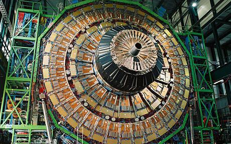

If it's going to bring on the end of the world, so be it. I couldn't think of a better way to go.
http://www.thesun.co.uk/sol/homepage/featu...icle1630897.ece
Discuss
The Sun is a tabloid, Mysterypea. It's highly unlikely that the LHC will produce any sort of apocalyptic event.
What Wikipedia says about this Professor Otto Rossler:
"A majority of experts in these fields dismissed his claims as substantial misconceptions of the general theory of relativity, as well as being inconsistent and disproved through measurement experiments.[6][7][8][9]"
"A majority of experts in these fields dismissed his claims as substantial misconceptions of the general theory of relativity, as well as being inconsistent and disproved through measurement experiments.[6][7][8][9]"
5 Scientific Experiments Most Likely To End The World (WARNING: foul language)
I've marked the start date on the calendar. Now we can count down till the end of the world.
I think it's a deadly mix of moronic redneck-o-pedia tabloid logic and ignorance.
That will bring about the end of the world. Not a LHC.
That will bring about the end of the world. Not a LHC.
5 Scientific Experiments Most Likely To End The World (WARNING: foul language)Ahaaha, oh man, that shit is high-larious.
I followed a link to this one. I like to think i would act differently from most of those people. (WARNING: foul language)
People read articles in the Sun?
I presume they're not aware that there are boobies literally as soon as you open the paper up?
That link of Suki's is brilliant! I was laughing for ages.
I presume they're not aware that there are boobies literally as soon as you open the paper up?
That link of Suki's is brilliant! I was laughing for ages.
17-mile-long machine? I highly doubt that.
I've marked the start date on the calendar. Now we can count down till the end of the world.
Kinda like new-years, except without the fun. Its all a bunch of hooey if you ask me.
The worst that will happen is the creation of a black hole barely bigger than a subatomic particle. Nothing to worry about.
It would be awesome if they didn't find the Higgs Boson. Well, I would laugh anyways. Then I would realize how that actually kind of sucks, since that was the primary purpose of LHC. I wonder if they'll find it or not. Either way, LHC won't be the end of the world.
It would be awesome if they didn't find the Higgs Boson. Well, I would laugh anyways. Then I would realize how that actually kind of sucks, since that was the primary purpose of LHC. I wonder if they'll find it or not. Either way, LHC won't be the end of the world.
17-mile-long machine? I highly doubt that.It's mostly a long tunnel full of magnets for accelerating protons to incredibly high speeds and energies.
There is probably a bunch of gothic people bent on the end of the world.
The worst that will happen is the creation of a black hole barely bigger than a subatomic particle. Nothing to worry about.
It would be awesome if they didn't find the Higgs Boson. Well, I would laugh anyways. Then I would realize how that actually kind of sucks, since that was the primary purpose of LHC. I wonder if they'll find it or not. Either way, LHC won't be the end of the world.
Actually, finding unexpected things is the whole point of experiments like this.
17-mile-long machine? I highly doubt that.
actually it is, in a giant circle, underground
It is unlikely that this end will EVER happen. Any gravitational fields generated by particle saturation would dissipate within short periods of time, which when coupled with a small catchment area means little to no damage.
And besides, things like this happen all the time at the Fermilab accelerator, and nobody gives a damn.
And besides, things like this happen all the time at the Fermilab accelerator, and nobody gives a damn.
This is entirely related, and nerd..ly awesome
http://www.telegraph.co.uk/earth/main.jhtm...6/scirap126.xml
http://www.telegraph.co.uk/earth/main.jhtm...6/scirap126.xml
I'll be preparing my rocket for strange matter activity.
The only good thing about the sun is page 3. I've completely given up on it now because of the way that they twist things.
Like the other day there was this story about some guy that was apparently killed by drinking a load of booze while on holiday, but was all written to make it sound like the drink killed him. Then in the very last sentence of the article it said that he contracted MRSA while in hospital, but that it was the drink that killed him. Either way, they love to tell things how they like to get a good sounding story, rather than telling the truth, but I digress.
I think that this is nothing to worry about. I mean I'm hardly going to get worked up if it's something that the sun says.
Like the other day there was this story about some guy that was apparently killed by drinking a load of booze while on holiday, but was all written to make it sound like the drink killed him. Then in the very last sentence of the article it said that he contracted MRSA while in hospital, but that it was the drink that killed him. Either way, they love to tell things how they like to get a good sounding story, rather than telling the truth, but I digress.
I think that this is nothing to worry about. I mean I'm hardly going to get worked up if it's something that the sun says.
That article from cracked.com was quite interesting actually. I read some other one that were good as well that were linked to it at the end.

I'm sorry. People were talking about this during a class today, and here's what I said:
"Well, that's great. While you guys are enjoying the Earth's destruction, I'll be having fun at my harp lesson."
Fortunately, my lesson went after the time it was meant to start (3 hours ago or so), so I assume I'm fine.
I really don't believe it's worth worrying. If it was going to end the Earth, I'm sure more people would have heard about this.
However, just to cover myself, if you're reading this from a computer that's burning, and everyone around you is burning, and some burning guy is whipping you to re-death, then I was wrong.
"Well, that's great. While you guys are enjoying the Earth's destruction, I'll be having fun at my harp lesson."
Fortunately, my lesson went after the time it was meant to start (3 hours ago or so), so I assume I'm fine.
I really don't believe it's worth worrying. If it was going to end the Earth, I'm sure more people would have heard about this.
However, just to cover myself, if you're reading this from a computer that's burning, and everyone around you is burning, and some burning guy is whipping you to re-death, then I was wrong.
Does This
I think so!

look like a deathray to you?I think so!
IF
---
---
IS SOMEWHAT EQUAL TO
---

---
THEN
---
---
---
---
IS SOMEWHAT EQUAL TO
---
---
THEN
---
---
After reading the article in monday's issue of the sun, it said that if black holes were created and stable enough to sustain themselves, then we wouldn't even see the effects until about 4 years time when we see beams of light coming out of the Indian ocean, or something along those lines. I found the whole article pretty funny, with the sun's typical 'Let's try and scare everyone for no reason' tactics.
17-mile-long machine? I highly doubt that.
The machine is a circle with circumference 17 miles; the tube itself is 17 miles.
That's a very good syllogism, Pawz.
I second Demonz comment, and I think I can see my house in that final image.
Since the machine went through it's first few collisions today, and there are no black holes (I'm sure they would have noticed), we're probably safe. Though somehow, those collisions between particles have not stopped the collisions between heads.
Since the machine went through it's first few collisions today,The collisions are in October, IIRC. Today was the first time the proton beam was fired all the way around the ring.
The collisions are in October, IIRC. Today was the first time the proton beam was fired all the way around the ring.
Oh...
Okay, maybe I still have a chance (however slim) to see the end of the world in my lifetime. Kewl!
Yeah he's right, which makes the 'end of the world' scenario that some people have been spinning on this even more ludicrous since today wasn't even the 'big' test.Since the machine went through it's first few collisions today,The collisions are in October, IIRC. Today was the first time the proton beam was fired all the way around the ring.
There is no chance of this machine causing the end of the world. It's against the laws of physics.Yeah he's right, which makes the 'end of the world' scenario that some people have been spinning on this even more ludicrous since today wasn't even the 'big' test.Since the machine went through it's first few collisions today,The collisions are in October, IIRC. Today was the first time the proton beam was fired all the way around the ring.
...but that would be hilarious if a gravitational depression occurred that only made a few people in the facility fall over like dominoes into the nearest computer rack. Just think of what the tabloids would write.